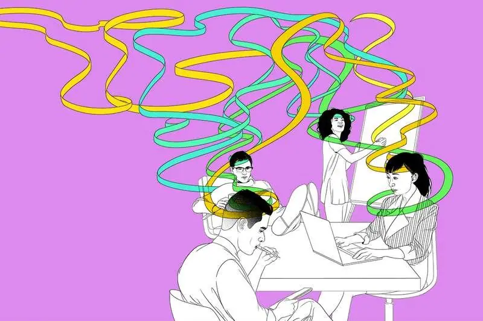

Articles ·
‘We’ll die before we find the answer’: Crisis at the heart of physics

By Daniel Cossins
YOU may have heard that physics is in crisis. We were told that it would reveal the secrets to the origin of the universe and the fundamental nature of reality. Stephen Hawking even told us that it would “show us the mind of God“. But the big discoveries have dried up. Yes, we found the Higgs boson and detected gravitational waves, but they were predicted decades ago. None of the really ambitious ideas from the past 30 years or so have come good.
So, what’s going on? To find out, I have come to the Perimeter Institute in Waterloo, Canada, a facility dedicated to forging – as its mission statement has it – “new, mind-bending ideas about the ultimate nature of our universe”. It is home to perhaps the greatest concentration of theoretical physicists in the world, and they enjoy more freedom than most to think bold thoughts. If anyone can shed light on the crisis – and perhaps point to a way out of it – it would be the people here.
Neil Turok, director of the institute, doesn’t deny there is a crisis. When I am led to his office for what I am told will be a 15-minute conversation, he regales me for an hour, starting with an unflinching assessment of his field. “When I got into physics in the early 80s, it stopped being successful,” he says. Yikes.
Many of his colleagues don’t put it so strongly. Some prefer to avoid the term crisis. But they are no strangers to the perception that theoretical physics, at least at its most ambitious, is in a funk.
“We firmly believe there are crisp answers to our questions,” says Luis Lehner, who spends his days trying to figure out how gravity might deviate from Einstein’s theory of general relativity when pushed to extremes. But what he says next puts the current challenge in context: “One of the things that sets us apart is that we are happy to die without having the answers ourselves.”
Theorists have enjoyed better times. Indeed, for much of the 20th century, they were on a roll. It started with Einstein. His theory of general relativity, which depicts gravity as the product of warped space-time, has been proved right time and again. Then there was the rise of quantum mechanics in the 1920s. A frankly bonkers collection of ideas describing the subatomic world, it has nevertheless passed every experimental test to date.
Standing on these shoulders, later theorists crafted the two standard models: one to explain the particles and forces, another to make sense of the origins and evolution of the cosmos at large. The standard model of particle physics is particularly impressive in that it describes the workings of all known matter in a neat set of equations that could fit on a T-shirt. Its final flourish came in the form of the Higgs boson, a mass-giving particle conceived on a mathematical hunch in the 1960s and first sighted at the Large Hadron Collider (LHC) at CERN, near Geneva in Switzerland, in 2012.
Such is the power of theoretical physics. But the standard models don’t have all the answers, and none of the proposed ideas that would build on them has turned out to be right.
Of course, not all theorists study particles and cosmology. They work on all sorts of things, from lasers to bizarre phases of matter that could give rise to exotic materials. But when it comes to what most of us would consider the juicy questions – the origins of the universe, the fundamental laws of nature – it is fair to say that the roll has slowed.
“Progress gets harder,” says Lehner. “Pushing into new frontiers is more delicate than before, and it costs more. It took decades to build an experiment capable of detecting gravitational waves. The Higgs was the same. This is just the nature of things.” His point is that it is hard to recognise good theories until we test them, and testing is increasingly tricky because it means smashing particles together at ever higher energies, and viewing the cosmos in ever higher definition. So we just have to be patient.
The next time I pass Lehner’s office, he has his head firmly planted on his desk. OK, so physics is hard. And in some ways theorists have been victims of their own success, in that the models they have built have worked so well that it is hard to think outside the box when looking for the next breakthrough. Then again, surely we could have expected a few recent ideas to have paid off, given the enormous and expensive experiments we have built to test them.
The LHC was not meant just to find the Higgs. It was also supposed to reveal the plethora of particles predicted by supersymmetry, a mathematically elegant theory crafted to explain why the Higgs is so much lighter than it should be according to the standard model, and why gravity is so weak compared with the other fundamental forces. The LHC has found nothing of the sort, and the absence of evidence for this treasured theory has prompted some soul-searching. Even those who forged the idea are now calling into question the underlying assumption of “naturalness”, namely that the laws of nature ought to be plausible and coherent, rather than down to chance.
“We did learn something: we learned what is not the case,” says Savas Dimopoulos. A theorist at Stanford University in California, and one of the founders of supersymmetry, he happens to be visiting the Perimeter Institute while I am there. How do we judge what theories we should pursue? “Maybe we have to rethink our criteria,” he says.
The biggest ideas in cosmology have suffered a similar fate. Take the notion that in the split second after the big bang, the universe underwent a stupendous inflation. It would explain a lot, such as why the universe appears the same in all directions. Again, though, we have no real evidence for it.
The outlook gets ever bleaker when you consider our attempts to stitch together general relativity and quantum mechanics. For the loudest critics, this is where the ultimate bogeyman lurks: string theory, the notion that particles are just the visible bits of objects called strings, that exist in several extra dimensions. It isn’t the only theory of quantum gravity, but it is by far the most popular in terms of the number of theorists who work on it. However, it is yet to produce a single testable prediction.
For cosmologist Niayesh Afshordi, the thread that connects these botched embroideries is theorists’ tendency to devote themselves to whatever happens to be the trendiest idea. “It’s a bandwagon effect,” he says. He thinks it has a lot to do with the outsize influence of citations.
“The fight now is not to find a fundamental theory. It is to get noticed, and the easiest way to do that is get on board a bandwagon,” he says. “You get this feedback loop: the people who spend longer on the bandwagons get more citations, then more funding, and the cycle repeats.” For its critics, string theory is the ultimate expression of this.
So far, so deflating. And yet everyone I speak to insists there are reasons to be cheerful. Although it looks increasingly unlikely, the LHC could still find evidence of something like supersymmetry, and our latest telescopes might yet uncover the imprint of inflation in ancient radiation. Even if neither pans out, a new generation of theorists has already moved on to what will, with luck, prove to be greener pastures.
Asimina Arvanitaki, the first woman to hold a research chair at the Perimeter Institute, is making a name for herself by finding clever new ways to test neglected theories. Spending an hour in her company is enough to convince me that the future of physics is bright. “There are people who think that, using just the power of our minds, we can understand what dark matter is, what quantum gravity is,” says Arvanitaki. “That’s not true. The only way forward is to have experiment and theory move in unison.”
As for Turok, he is optimistic. “We are entering a crisis of the most fruitful kind, where the very foundations are in jeopardy, and that’s just thrilling,” he says. “I’m busy trying to persuade my colleagues here to disregard the last 30 years. We have to retrace our steps and figure out where we went wrong.”
While everyone I speak to at the institute tells me that this stuff is maddeningly complicated and getting more so all the time, Turok thinks it is all quite simple. “I have come to the view that the known laws of physics will actually be adequate to explain everything,” he says, before reeling off an exhilarating explanation of why there was no such thing as the big bang that boils down to re-interpreting the universe as a universe/anti-universe pair, analogous to matter and anti-matter. This, he says, gives us a solution for dark matter “so banal that people are almost shocked we missed it”.
Watch this space. Even if Turok turns out to be wrong, at least his approach is indicative of a field that knows it must think again. And having spent a few days in the company of theorists tasked with explaining the entire universe, watching as they pace the halls and bash their heads on their desks, I have come to see that we should probably cut them some slack.
“This place is all about encouraging people to think ambitious, original thoughts, 99 per cent of which will be wrong,” says Turok. “If just one turns out to be right, it will justify everything.”
Physicist, steel thyself
Theorists at the Perimeter Institute in Waterloo, Canada, on how they get through the day
Asimina Arvanitaki
I spend most of my time being confused about things and feeling like an idiot. But the way you feel at the moments where everything falls into place in your mind and you have figured out something important, it is amazing.
It is not clear when a good idea will come. It usually comes after thinking about things for a while and feeling stuck and then suddenly there is this aha moment. You cannot really switch it off.
Luis Lehner
The life of a physicist in general is characterised by a deeply ingrained belief that somehow there is an answer to the question you pose, and by understanding that we will wait however long it takes. I do a lot of thinking while pacing, and in particular while running. I like to go out and just get lost in thoughts while jogging.
Niayesh Afshordi
I try to visualise a picture of what is going on, and what is missing or doesn’t feel right. I will then try to run down ideas that could fix the problem, and examine their consequences.
The ideas do tend to come up at the most ungodly hours. My mood tends to periodically switch between frustration when ideas don’t work, and dread when they do, subject to approval of anonymous reviewers.
Avery Broderick
I spend most of my days feeling very stupid. I’ll get in front of the blackboard, Eye of the Tiger playing in my head, write something, erase it, change my pose, write something else, erase it, ad infinitum. Realistically, that’s how it works. If we knew what we were doing it wouldn’t be called research.
https://www.newscientist.com/…/mg24132130-600-well-die-bef…/
https://www.facebook.com/18728487427/posts/10156278352717428/
https://www.nytimes.com/…/particle-physics-large-hadron-col…
https://www.newscientist.com/…/mg24132130-600-well-die-bef…/
Migrated from the AUASS website archive as published, with the formatting tidied.